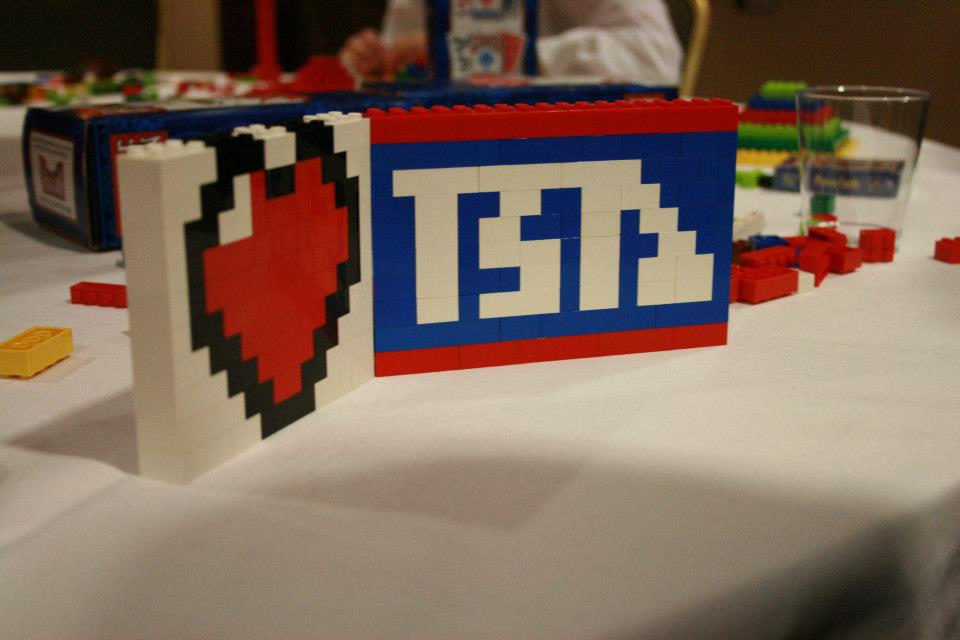

About Us
The Henry M. Jackson High School (JHS) technology student association club is advised by Richard Wigre, who is a beloved teacher and mentor. Since the inception of the chapter, Jackson has actively encouraged and inspired students to explore the growing STEM fields: Science, Technology, Engineering, and Mathematics. These students are able compete in events throughout the year including subjects such as: Webmaster, Promotional Graphics, or even On Demand Video. As the years pass, the JHS TSA chapter has grown and continues to gather the interest of the influx of incoming students in the Mill Creek area.

Pictured above: Richard Wigre
Furthermore, our TSA chapter has collaborated with Jackson multiple times. For example, we are active participants in our school hosted Oktoberfest. Oktoberfest is a school run event in which clubs can set up booths to showcase their clubs. Taking advantage of photoshop and a green screen, we take a photo, edit it on site, and email it to the consumer. This photo booth has been very successful in the past and is a treat for Oktoberfest attendees. By showing off the ability of TSA club members in a fun and creative way, we spread awareness to our clubs' goals and practice their skills in a real world setting.
Pictured above: Hannah Cho, Natalie Weed, Lydia Kim, Heejoon Ahn, and Indira Rayala
With the work of our advisor and hard working officers, the JHS TSA chapter has guided students to put their knowledge into various projects and activities. With their effort, students have discovered their love of the science and technology field while gaining valuable experiences and friendships. The goal of TSA is to expose students to the many opportunities in these fields, and by allowing students to participate in projects. Many are discovering their interests in subjects they may have never found anywhere else.
Our Members

State 2014
The 2013-2014 school year welcomed over 40 new students into the club. Eager to match the accomplishments of their predecessors, each member has been preparing to showcase their work and research at the state level competition.
Officers
President Heejoon Ahn
Heejoon Ahn has been a TSA member for three years and has contributed many successes in both Biotechnology and Scivis where she placed 3rd and 1st in state. She is currently the President for this year’s Jackson Chapter where her duties consist of member attendance and meeting minutes as well as facilitating the growth of this year’s TSA. Through her knowledge and experience of a variety of events, she continues to serve as an excellent role model for future officers.

Vice President Caleb Kim
Caleb Kim, a current senior, is also the Vice President for our chapter. He has been a member for three years where he has demonstrated extraordinary skills in on demand video where he helped write the script and act in their state project. They were able to place 3rd at State and qualify for Nationals. This year we are looking to see even further progress and improvement.

Secretary Nabil Syed
Nabil Syed currently is a junior where he has been a member for three years. By showing great leadership skills, he was elected as this year’s secretary. Previous achievements of Nabil include: placing 4th on digital video and qualified to participate in State for Structural engineering. We are looking to see him excel in even further events in the future.

Treasurer Lessane Ketema
Lessane is a senior who has been part of TSA for all four years of his high school career. He serves as our treasurer and is an integral part of keeping track of our club’s financial situation Competing in many different events every year such as Children’s Stories and Video Game Design, he is well versed in TSA events and has a lot of experience with the club. By showing immense leadership, he has earned a spot in our TSA leadership.

Reporter Seven Bennett
Seven Bennett has been a member for two years and is the reporter for our chapter. Her main job is to work on graphics that promote TSA for our school. She has also participated in extemporaneous speech and debating technological issues. Therefore, she has experience with areas related to communication that further enhance her skills as a reporter.

Sergeant in Arms Lydia Kim
Lydia Kim is currently a junior and has been a member of TSA for two years. Although she is a fairly new officer, she has competed in a variety of events and has placed at the national level. For example, in her sophomore year, she participated in our biotech team, which placed 6th out of 6,800 people in the nation. Through her academic prowess, she continues to set the bar for excellence.

Advisor Rick Wigre
Rick has been an astounding and vital addition to our chapter. Leading as our chapter advisor, Rick was the recipient of the 2012-2013 advisor of the year award in Washington. Through his excellent counseling, TSA seems to grow each and every year.